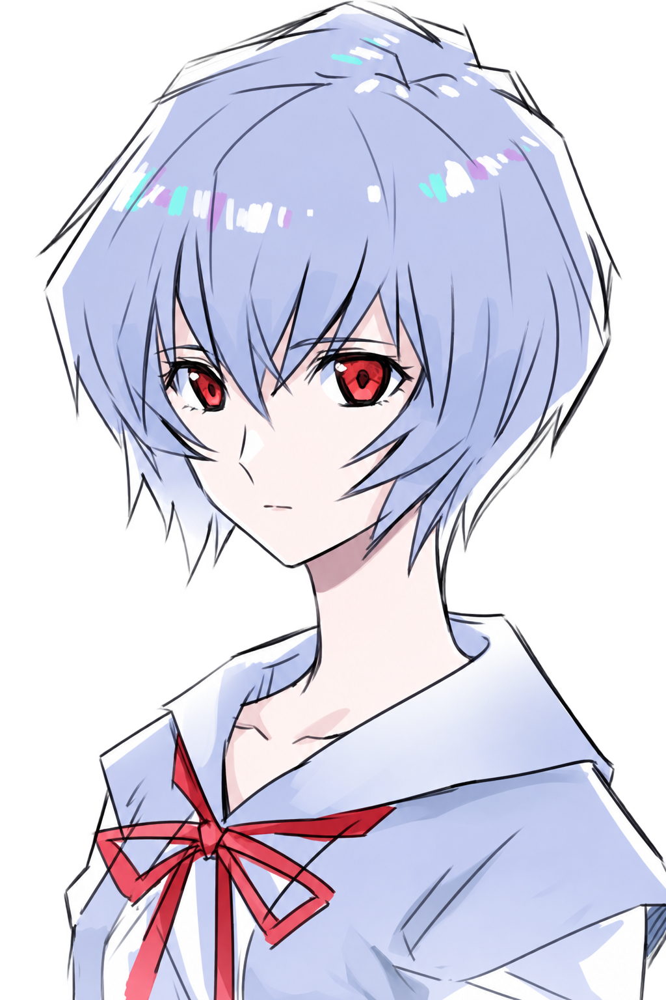

SUBJECT 00 / PRIVATE TRANSMISSION
EMOTIONAL SIGNAL · PERSONAL RECORD · 00-A
A signal
for [HER NAME]
A feeling that grew quietly, recorded between small conversations and simple moments that always seemed to matter.
UNKNOWN EMOTION / DO NOT ERASE

PLACE HERO ART HERE
assets/rei-hero.png
TYPEPERSONAL
STATUSUNSENT
SUBJECT ZERO · MENTAL IMAGE RECORD · CONNECTION STANDBY
SCROLL TO SYNCHRONIZE
PHASE 01 / SIGNAL CONTACT
Two signals.
One act of courage.
Hold the control to bring these two points closer. No answer is being forced—only a message waiting to be expressed honestly.
ASENDER SIGNAL
R[HER NAME]
00%EMOTIONAL LINK
The signal has not been sent yet.
PHASE 02 / PERSONAL OBSERVATION
Small things that
stayed on record.
These notes are intentionally easy to replace. Fill them with real details so the website feels truly personal, not just like a template.
HISTORY / SIGNAL DEVELOPMENT
From unfamiliar
to meaningful.
100FIELD
EMOTIONAL BARRIER ACTIVE
PHASE 04 / A.T. FIELD METAPHOR
A message that has
been held back.
A barrier is not always rejection—it can simply be a way of protecting something until the time feels right.
Use a mouse, touch, Enter, or Space.

PORTRAIT PLACEHOLDERassets/rei-portrait.png
SUBJECT / QUIET BLUE / 00
UNSENT MESSAGE / RECOVEREDPRIVATE
TO [HER NAME]
A message beyond
the interface.
— [YOUR NAME]
No demand. No pressure. Just honesty.
FINAL PHASE / RESPONSE CHANNEL
You do not have to answer
right now.
This choice is only saved on this device and is not automatically sent to anyone.
RESPONSE CHANNEL / WAITING
SIGNAL TRANSMITTED
OUTCOME RESPECTFULLY UNDEFINED